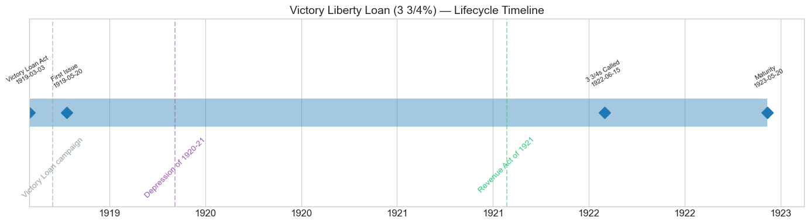
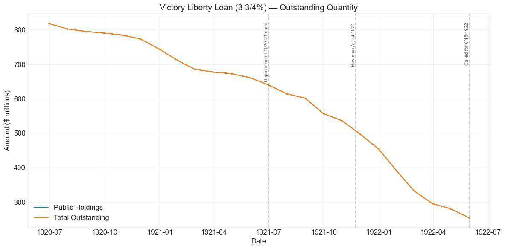
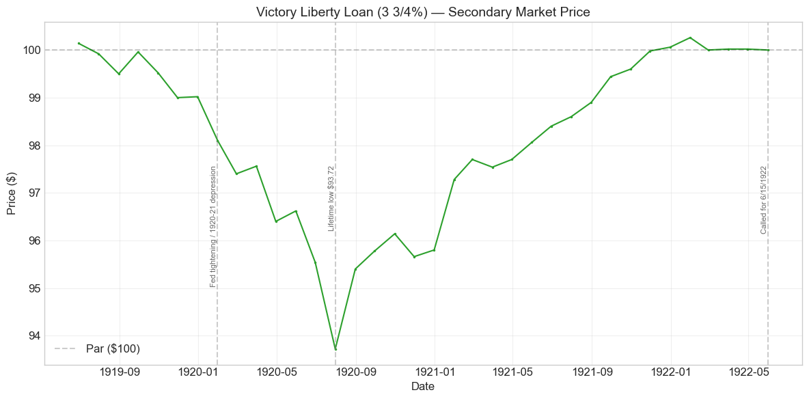
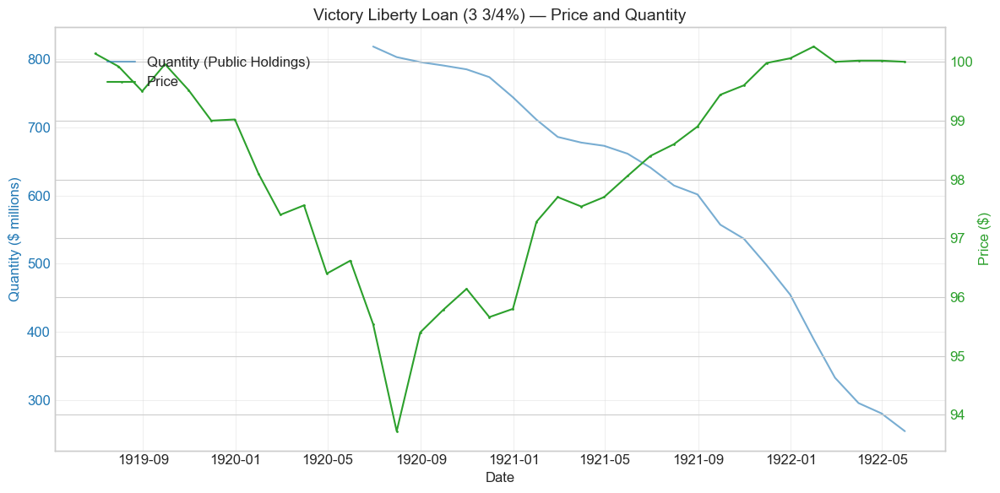
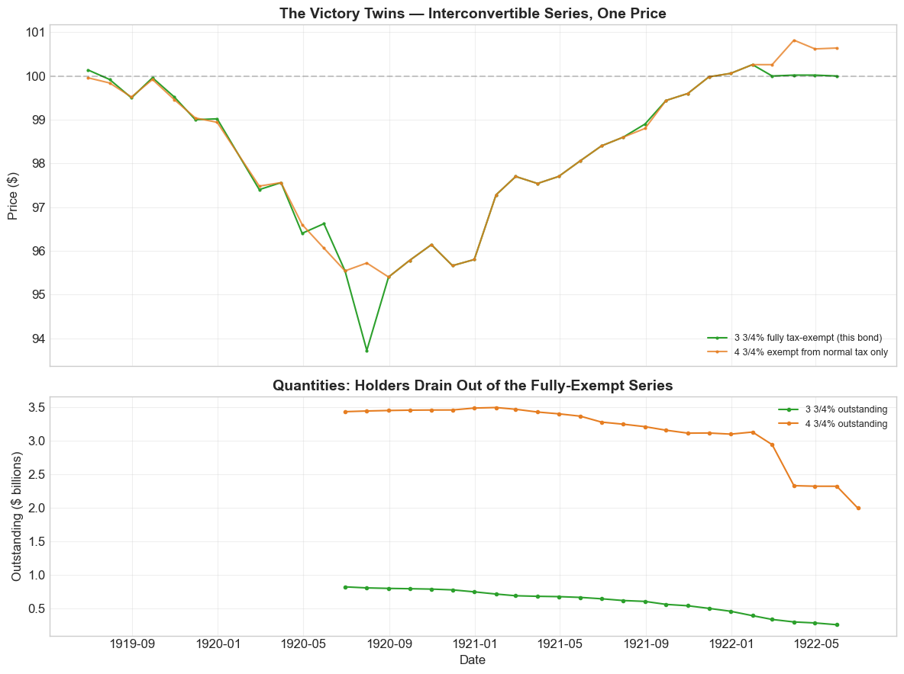
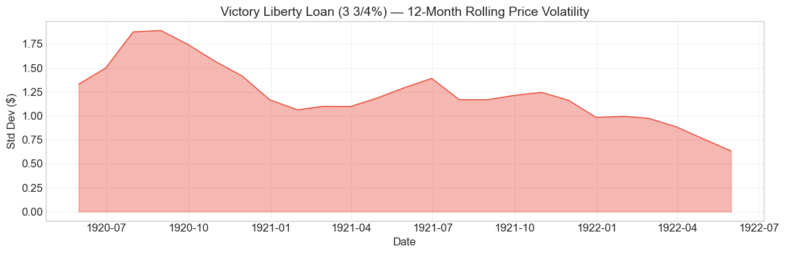

Bond Biography: Victory Liberty Loan (3 3/4%)#
The Price of Tax Exemption#
An Enhanced Chapter from the Hall-Payne-Sargent US Federal Bond Database (2,857 issues, 1776–1960)
Bond ID (L1): 20171 | Category: Interest Bearing > Marketable > Liberty Loan Coupon Rate: 3.75% | First Issue Date: May 20, 1919 | Term: 4 years (callable from June 15, 1922)
import pandas as pd
import numpy as np
import matplotlib.pyplot as plt
import matplotlib.patches as mpatches
import datetime
import warnings
warnings.filterwarnings('ignore')
plt.style.use('seaborn-v0_8-whitegrid')
plt.rcParams.update({'figure.figsize': (12, 6), 'font.size': 12,
'axes.titlesize': 14, 'axes.labelsize': 12})
# Load the bond database
store = pd.HDFStore('../data/BondDF.h5', mode='r')
BondList = store['BondList']
BondQuant = store['BondQuant']
BondPrice = store['BondPrice']
store.close()
# Drop one-month prints flagged as data artifacts (each is described in the chapter text)
ARTIFACT_PRINTS = [(20090, '1859-12-31'), (20133, '1919-12-31'), (20170, '1920-01-31'), (20166, '1920-05-31')]
for _id, _d in ARTIFACT_PRINTS:
for _s in ['Average', 'Coupon', 'Registered']:
if (_id, _s) in BondPrice.columns:
BondPrice.loc[pd.Timestamp(_d), (_id, _s)] = float('nan')
BondQuant_T = BondQuant.transpose()
BondPrice_T = BondPrice.transpose()
bond_id = 20171
print(f'Loaded data for: Victory Liberty Loan (3 3/4%) (ID: 20171)')
/Users/thomassargent/anaconda3/lib/python3.9/site-packages/pandas/core/arrays/masked.py:60: UserWarning: Pandas requires version '1.3.6' or newer of 'bottleneck' (version '1.3.5' currently installed).
from pandas.core import (
Loaded data for: Victory Liberty Loan (3 3/4%) (ID: 20171)
Overview#
The Victory Liberty Loan (3 3/4%) was the fully-tax-exempt half of the fifth and final loan of the World War I bond campaigns — the “Victory” loan floated in the spring of 1919, after the guns had fallen silent, to pay the bills the war left behind. Its statutory root was the Second Liberty Bond Act of September 24, 1917, as amended by the Victory Liberty Loan Act of March 3, 1919, which authorized the Treasury to issue short-term convertible gold notes rather than the long bonds of the four wartime loans. The notes were dated May 20, 1919, matured May 20, 1923, and were callable, in whole or in part, on or after June 15, 1922.
What makes this security worth a chapter of its own is not its size — at its first observation in the database it accounted for less than a fifth of the roughly $4.5 billion Victory issue — but its design. Subscribers to the Victory loan were offered a menu: a 4 3/4 percent note exempt from state and local taxes and from the normal federal income tax but subject to federal surtaxes, or a 3 3/4 percent note — this bond — exempt from all federal, state, and local taxation (except estate and inheritance taxes). Crucially, the two series were interconvertible at the holder’s option: a holder of 3 3/4s could swap into 4 3/4s at any time, and vice versa. The one-point coupon spread was therefore an explicit, market-tested price tag on the value of exemption from the federal surtax, which in these years reached rates on the largest incomes of over 70 percent (the combined normal-plus-surtax top rate hit 77 percent on 1918 incomes).
During its short secondary-market life the 3 3/4s’ average price was $98.19, ranging from $93.72 to $100.26 — but that record rests on only 36 monthly observations from June 1919 to May 1922, and this chapter is candid about how little a three-year price series can carry. The richer story is in the quantity data: outstanding 3 3/4s shrank month after month, from $818.4 million in June 1920 to $254.5 million in May 1922, as holders exercised their conversion option and the Treasury retired the issue. That steady bleed is the data’s fingerprint of tax-clientele sorting — investors sorting themselves between the two series according to their own marginal tax rates — and it is why this modest note deserves attention as one of the earliest revealed-preference measurements of the value of tax exemption embedded in a U.S. Treasury security.
The Victory Loan of 1919: Financing the Peace#
The Armistice of November 11, 1918 ended the fighting but not the spending. Demobilization, transport of two million soldiers home, settlement of war contracts, and continuing loans to the Allies left the Treasury with heavy obligations through 1919, largely bridged by short-term certificates of indebtedness that had to be funded into something longer. The answer was one final national campaign — rebranded from “Liberty” to “Victory” — run from April 21 to May 10, 1919 under Secretary of the Treasury Carter Glass, who had succeeded William Gibbs McAdoo in December 1918.
The campaign machinery — Liberty Loan committees, celebrity rallies, the Federal Reserve Banks as distribution hubs — was the apparatus built up across the four wartime drives, and its story belongs to the Liberty chapters in this volume (see especially the 1st Liberty Loan and 4th Liberty Loan chapters). Selling a peacetime loan was a harder job than selling a wartime one: the patriotic urgency was gone, and participation fell from roughly 23 million subscribers for the Fourth Loan to roughly 12 million for the Victory. Even so, the offering was oversubscribed, and about $4.5 billion of Victory notes were issued.
Two design choices distinguished the Victory notes from the wartime Liberty bonds:
Short maturity. The Victory issue consisted of four-year notes, not ten-to-thirty-year bonds. The Treasury expected postwar surpluses and a sinking fund to retire the debt quickly, and did not want to lock in high peacetime coupons for decades.
The tax menu. Instead of one security, subscribers chose between two interconvertible series priced to be (approximately) equivalent for an investor at a particular tax margin — the subject of the next section.
The companion series, the Victory Liberty Loan 4 3/4s, receives its own chapter, which carries the fuller campaign narrative; this chapter concentrates on what the 3 3/4 percent series uniquely reveals.
Historical Context#
The following major events shaped this bond’s short life:
Date |
Event |
Category |
|---|---|---|
1917-04-06 to 1918-11-11 |
World War I (US participation) |
War |
1919-03-03 |
Victory Liberty Loan Act |
Legislation |
1919-04-21 to 1919-05-10 |
Victory Loan campaign |
Fiscal |
1919-05-20 |
Notes issued |
Fiscal |
1920-01-01 to 1921-07-01 |
Depression of 1920–21; Fed discount rates raised sharply |
Crisis / Monetary |
1921-11-23 |
Revenue Act of 1921 (top surtax cut) |
Legislation |
1922-06-15 |
3 3/4% series called for redemption |
Fiscal |
1923-05-20 |
Victory notes mature |
Fiscal |
Three forces dominate:
The postwar boom and bust. The notes were born into the inflationary boom of 1919, then lived through the brutal Depression of 1920–21. The Federal Reserve, having held rates low to support the Liberty loans, tightened hard in 1920; market yields rose well above the Victory coupons, and all the war loans sold off. The 3 3/4s touched their lifetime low of $93.72 in July 1920. Because the Victory notes were short — four years to maturity — their price decline was far milder than the double-digit drawdowns suffered by the long Liberty bonds over the same months: a live demonstration of duration risk, visible in the comparative chart below.
Falling tax rates. The 3 3/4s’ entire reason for being was the wartime surtax schedule. As the political tide turned toward the tax cuts of the Harding–Mellon era — beginning with the Revenue Act of 1921 — the option value of full exemption shrank, and with it the natural clientele for this series.
Rapid retirement. Postwar budget surpluses and the sinking fund established in 1919–20 let the Treasury buy in and retire Victory notes steadily, then call the 3 3/4 percent series entirely on June 15, 1922, nearly a year before maturity. The database’s price and quantity series for this bond accordingly end in May 1922. (Events such as the Great Depression and the 1933–34 gold measures, flagged by the automated event scan, postdate this bond’s redemption and did not touch its holders.)
# Bond Lifecycle Timeline
fig, ax = plt.subplots(figsize=(14, 4))
# Key dates
dates = [('Victory Loan Act', '1919-03-03'), ('First Issue', '1919-05-20'),
('3 3/4s Called', '1922-06-15'), ('Maturity', '1923-05-20')]
events = [('Victory Loan campaign', '1919-04-21', 'other'),
('Depression of 1920-21', '1920-01-01', 'crisis'),
('Revenue Act of 1921', '1921-11-23', 'legislation')]
import matplotlib.dates as mdates
from datetime import datetime
# Plot bond lifetime bar
d0 = datetime.strptime(dates[0][1], '%Y-%m-%d')
d1 = datetime.strptime(dates[-1][1], '%Y-%m-%d')
ax.barh(0, (d1 - d0).days, left=mdates.date2num(d0), height=0.3,
color='#1f77b4', alpha=0.4, label='Bond Lifetime')
# Mark key dates
for label, date_str in dates:
d = datetime.strptime(date_str, '%Y-%m-%d')
ax.plot(mdates.date2num(d), 0, 'D', color='#1f77b4', markersize=10)
ax.annotate(f'{label}\n{date_str}', (mdates.date2num(d), 0.25),
ha='center', va='bottom', fontsize=8, rotation=30)
# Mark historical events
colors = {'war': '#e74c3c', 'crisis': '#9b59b6', 'legislation': '#2ecc71', 'other': '#95a5a6', 'monetary': '#f39c12'}
for name, date_str, cat in events:
d = datetime.strptime(date_str, '%Y-%m-%d')
ax.axvline(mdates.date2num(d), color=colors.get(cat, 'gray'), alpha=0.5, linestyle='--')
ax.annotate(name, (mdates.date2num(d), -0.25), ha='center', va='top',
fontsize=10, rotation=45, color=colors.get(cat, 'gray'))
ax.set_yticks([])
ax.xaxis.set_major_formatter(mdates.DateFormatter('%Y'))
ax.set_title('Victory Liberty Loan (3 3/4%) — Lifecycle Timeline')
ax.set_ylim(-1, 1)
plt.tight_layout()
plt.show()

Bond Features#
Feature |
Detail |
|---|---|
Name |
Victory Liberty Loan (3 3/4%) — 3 3/4% Convertible Gold Notes of 1922–23 |
Authorizing Act |
Second Liberty Bond Act (September 24, 1917), as amended by the Victory Liberty Loan Act (March 3, 1919) |
First Issue Date |
May 20, 1919 |
Term |
4 years (dated May 20, 1919; due May 20, 1923) |
Callable |
Yes — on or after June 15, 1922; this series called June 15, 1922 |
Coupon Rate |
3.75%, payable semi-annually |
Payable in Coin |
Yes (gold) |
Price Sold |
Par (100) |
Tax Status |
Exempt from all federal, state, and local taxation except estate and inheritance taxes |
Conversion Privilege |
Interconvertible with the 4 3/4% series at the holder’s option |
Denominations |
$50 to $10,000 |
Total Victory Issue (both series) |
~$4.5 billion |
The database records no separate authorized amount for this series because the Victory Liberty Loan Act authorized the notes in the aggregate, with the split between the two series determined by subscriber and holder choice — the whole point of the design.
# Display full bond features from database
row = BondList.loc[20171]
display_cols = [
"Treasury's Name Of Issue", 'Authorizing Act', 'Term Of Loan',
'First Issue Date', 'First Redemption Date', 'Final Redemption Date',
'Coupon Rate', 'Coupons Per Year', 'Callable', 'Coin',
'Authorized Amount', 'Price Sold'
]
print('Bond Features from Database:')
print('=' * 55)
for col in display_cols:
if col in row.index:
print(f' {col:<30} {row[col]}')
Bond Features from Database:
=======================================================
Treasury's Name Of Issue Victory Liberty Loan (3 3/4%)
Authorizing Act September 24, 1917
Term Of Loan 4 years
First Issue Date 1919-05-20 00:00:00
First Redemption Date NaT
Final Redemption Date NaT
Coupon Rate 3.75
Coupons Per Year 2.0
Callable 1.0
Coin 1.0
Authorized Amount nan
Price Sold 1.0
Bond Quantity Over Time#
The database’s quantity series for this bond runs from June 1920 to May 1922 (24 monthly observations), beginning at $818.4 million and ending at $254.5 million — a decline of 69 percent, spread across every single month of the sample. Note that the series begins more than a year after issue, so the original subscription split between the two series, and any conversions during 1919–early 1920, lie outside the observed window.
# Bond quantity over time
fig, ax = plt.subplots(figsize=(12, 6))
for stype in ['Public Holdings', 'Total Outstanding']:
try:
s = BondQuant_T.loc[(20171, stype)]
s = s[s.notna()]
if len(s) > 0:
ax.plot(s.index, s.values / 1e6, marker='.', markersize=3, linewidth=1.5, label=stype)
except KeyError:
pass
ax.set_title('Victory Liberty Loan (3 3/4%) — Outstanding Quantity')
ax.set_xlabel('Date')
ax.set_ylabel('Amount ($ millions)')
ax.legend()
ax.grid(True, alpha=0.3)
events = {'1921-07-01': 'Depression of 1920-21 ends',
'1921-11-23': 'Revenue Act of 1921',
'1922-05-31': 'Called for 6/15/1922'}
for date_str, label in events.items():
d = pd.Timestamp(date_str)
ax.axvline(d, color='gray', alpha=0.4, linestyle='--')
ax.text(d, ax.get_ylim()[1]*0.97, label, rotation=90, va='top', ha='right', fontsize=8, alpha=0.7)
plt.tight_layout()
plt.show()

Quantity Analysis: Reading the Conversion Flows#
The 3 3/4s’ outstanding stock declined in every one of the 24 observed months — there is not a single monthly uptick. Two mechanisms drained the series, and the data let us partially separate them:
1. Conversion into the 4 3/4s. From June 1920 through January 1921, the 3 3/4s fell by about $107 million while the 4 3/4 series’ outstanding rose by about $62 million over the same months. Since no new Victory notes were being issued, an increase in one series can only come from conversions out of the other. This is the cleanest window in the data on the tax-clientele toggle in action: with market yields near their 1920 peak and surtax reductions on the political horizon, the marginal holder of fully-exempt notes decided that one extra point of taxable coupon was worth more than the exemption, and swapped. In the break-even arithmetic of the earlier section, these were holders whose effective marginal surtax rate had fallen below (or was always below) roughly 21 percent — or who anticipated that it soon would.
2. Treasury retirement. From early 1921 onward both series decline together, reflecting sinking-fund and surplus-revenue purchases as the Treasury worked the short-dated Victory debt down ahead of maturity. The pace on the 3 3/4s accelerates sharply from late 1921 — the stock fell from $497.9 million in November 1921 to $254.5 million in May 1922, a 49 percent drop in six months — as the Revenue Act of 1921 (top combined rate cut to 58 percent for 1922) further cheapened the exemption, and as the June 15, 1922 call date approached. The series then vanishes from the database: the entire remaining 3 3/4 percent series was called for redemption on June 15, 1922.
The asymmetry between the two series is the headline: over the common observation window, the fully-exempt 3 3/4s shrank by 69 percent while the surtax-liable 4 3/4s shrank by only about a third. Holders were not fleeing the Victory loan; they were fleeing the tax-exempt version of it, exactly as declining surtax rates predicted they should. Treasury data on these conversions was compiled and studied contemporaneously for precisely this reason — as direct evidence on how much tax exemption was worth, at a time when the proliferation of tax-exempt securities was among the most contested questions in federal finance.
Secondary Market Prices#
Overall Statistics (1919-06-30 to 1922-05-31): Mean $98.19, Range $93.72–$100.26, Std Dev $1.76, 36 observations.
By Period:
Period |
Mean |
Std |
Min |
Max |
Obs |
|---|---|---|---|---|---|
Issue to call (1919-06 to 1922-05) |
$98.19 |
$1.76 |
$93.72 |
$100.26 |
36 |
A caution before interpreting: 36 monthly observations is a short record. Every statistic above rests on three years of month-end quotes, so this chapter draws no conclusions from the price series that the quantity series and the security’s design cannot independently support.
# Annotated price chart
fig, ax = plt.subplots(figsize=(12, 6))
s = BondPrice_T.loc[(20171, 'Average')]
s = pd.to_numeric(s, errors='coerce').dropna()
if len(s) > 0:
ax.plot(s.index, s.values, marker='.', markersize=3, linewidth=1.5, color='#2ca02c')
ax.axhline(100, color='black', alpha=0.2, linestyle='--', label='Par ($100)')
ax.set_title('Victory Liberty Loan (3 3/4%) — Secondary Market Price')
ax.set_xlabel('Date')
ax.set_ylabel('Price ($)')
ax.legend()
ax.grid(True, alpha=0.3)
events = {'1920-01-31': 'Fed tightening / 1920-21 depression',
'1920-07-31': 'Lifetime low $93.72',
'1922-05-31': 'Called for 6/15/1922'}
for date_str, label in events.items():
d = pd.Timestamp(date_str)
ax.axvline(d, color='gray', alpha=0.4, linestyle='--')
ax.text(d, ax.get_ylim()[1]*0.97, label, rotation=90, va='top', ha='right', fontsize=8, alpha=0.7)
plt.tight_layout()
plt.show()

# Price and Quantity — dual-axis chart
fig, ax1 = plt.subplots(figsize=(12, 6))
# Quantity (left axis)
for stype in ['Public Holdings', 'Total Outstanding']:
try:
q = BondQuant_T.loc[(20171, stype)]
q = q[q.notna()]
if len(q) > 0:
ax1.plot(q.index, q.values / 1e6, color='#1f77b4', alpha=0.6, label=f'Quantity ({stype})')
break
except KeyError:
pass
ax1.set_xlabel('Date')
ax1.set_ylabel('Quantity ($ millions)', color='#1f77b4')
ax1.tick_params(axis='y', labelcolor='#1f77b4')
# Price (right axis)
ax2 = ax1.twinx()
p = BondPrice_T.loc[(20171, 'Average')]
p = pd.to_numeric(p, errors='coerce').dropna()
if len(p) > 0:
ax2.plot(p.index, p.values, color='#2ca02c', marker='.', markersize=2, label='Price')
ax2.set_ylabel('Price ($)', color='#2ca02c')
ax2.tick_params(axis='y', labelcolor='#2ca02c')
ax1.set_title('Victory Liberty Loan (3 3/4%) — Price and Quantity')
ax1.grid(True, alpha=0.3)
fig.legend(loc='upper left', bbox_to_anchor=(0.1, 0.9))
plt.tight_layout()
plt.show()

Price Trends#
Within its short record, the price series traces a clean V:
1919: drifting off par. The notes were sold at 100 in May 1919 and quoted at $100.14 in June, but slipped to $99.02 by December as postwar inflation ran hot and the Federal Reserve began lifting discount rates from their wartime floor.
1920: the trough. The Fed’s sharp tightening and the onset of the 1920–21 depression pushed all government issues down. The 3 3/4s bottomed at $93.72 in July 1920 — a maximum drawdown of 6.4 percent from the June 1919 peak. Note how shallow this is beside the long Liberty bonds, which lost 13–15 percent from par in the same episode: with only three years left to run, the Victory notes’ pull-to-par sharply limited their interest-rate exposure.
1921–22: pull to par and the call ceiling. As the depression broke, deflation set in, and yields fell, the price climbed steadily back, crossing par in December 1921 and peaking at $100.26 in January 1922. Thereafter the quotes sit pinned at $100.00–100.02 through May 1922 — exactly what one expects for a note about to be redeemed at par on June 15, 1922: the call converted the security into a short claim on $100, and the market priced it as such. Notably, in these final months the companion 4 3/4s traded up to $100.82 while the called 3 3/4s stayed glued to 100 — the call, not taxes, driving the terminal spread.
Given 36 observations, we resist reading anything finer into month-to-month wiggles; where individual prints look anomalous (see the twin-series comparison below), data imperfections in the underlying newspaper quotations are the most likely culprit.
# The Victory twins: 3 3/4% (fully exempt) vs 4 3/4% (surtax-liable) — prices, spread, and quantities
p3 = pd.to_numeric(BondPrice_T.loc[(20171, 'Average')], errors='coerce').dropna()
p4 = pd.to_numeric(BondPrice_T.loc[(20170, 'Average')], errors='coerce').dropna()
q3 = BondQuant_T.loc[(20171, 'Public Holdings')].dropna()
q4 = BondQuant_T.loc[(20170, 'Public Holdings')].dropna()
pair = pd.concat([p3.rename('3 3/4% (exempt)'), p4.rename('4 3/4% (surtax-liable)')], axis=1).dropna()
pair['spread'] = pair['3 3/4% (exempt)'] - pair['4 3/4% (surtax-liable)']
fig, axes = plt.subplots(2, 1, figsize=(12, 9), sharex=True,
gridspec_kw={'height_ratios': [2, 1.4]})
# Top: the two prices and their spread
ax = axes[0]
ax.plot(pair.index, pair['3 3/4% (exempt)'], color='#2ca02c', marker='.', markersize=4,
linewidth=1.5, label='3 3/4% fully tax-exempt (this bond)')
ax.plot(pair.index, pair['4 3/4% (surtax-liable)'], color='#e67e22', marker='.', markersize=4,
linewidth=1.5, alpha=0.8, label='4 3/4% exempt from normal tax only')
ax.axhline(100, color='black', alpha=0.2, linestyle='--')
ax.set_ylabel('Price ($)')
ax.set_title('The Victory Twins — Interconvertible Series, One Price', fontweight='bold')
ax.legend(loc='lower right', fontsize=9)
ax.grid(True, alpha=0.3)
# Bottom: quantities of the two series
ax = axes[1]
ax.plot(q3.index, q3.values / 1e9, color='#2ca02c', marker='.', linewidth=1.5,
label='3 3/4% outstanding')
ax.plot(q4.index, q4.values / 1e9, color='#e67e22', marker='.', linewidth=1.5,
label='4 3/4% outstanding')
ax.set_ylabel('Outstanding ($ billions)')
ax.set_xlabel('Date')
ax.set_title('Quantities: Holders Drain Out of the Fully-Exempt Series', fontweight='bold')
ax.legend(loc='upper right', fontsize=9)
ax.grid(True, alpha=0.3)
plt.tight_layout()
plt.show()
print('Price spread (3 3/4s minus 4 3/4s), common months:')
print(f" mean {pair['spread'].mean():+.2f}, median {pair['spread'].median():+.2f}, "
f"min {pair['spread'].min():+.2f}, max {pair['spread'].max():+.2f}")
print(f" months with identical quotes: {(pair['spread'] == 0).sum()} of {len(pair)}")
common = q3.index.intersection(q4.index)
print('Quantity change over common window '
f'({common.min().date()} to {q3.index.max().date()}):')
print(f" 3 3/4%: ${q3.iloc[0]/1e6:,.0f}M -> ${q3.iloc[-1]/1e6:,.0f}M "
f"({(q3.iloc[-1]/q3.iloc[0]-1)*100:+.0f}%)")
q4c = q4.loc[q4.index <= q3.index.max()]
print(f" 4 3/4%: ${q4c.iloc[0]/1e6:,.0f}M -> ${q4c.iloc[-1]/1e6:,.0f}M "
f"({(q4c.iloc[-1]/q4c.iloc[0]-1)*100:+.0f}%)")

Price spread (3 3/4s minus 4 3/4s), common months:
mean -0.10, median +0.00, min -2.00, max +0.56
months with identical quotes: 19 of 35
Quantity change over common window (1920-06-30 to 1922-05-31):
3 3/4%: $818M -> $255M (-69%)
4 3/4%: $3,428M -> $2,317M (-32%)
Interpreting the Twins: One Price, Two Clienteles#
The chart above is the analytical heart of this chapter, and it delivers a result that is at first glance surprising and on reflection exactly right: the two series traded at essentially the same price. In most common months the database records identical quotes, and the mean spread is a few basis points.
Why should a fully-tax-exempt 3.75 percent note and a surtax-liable 4.75 percent note cost the same? Because of the conversion option. Since either note could be exchanged for the other at the holder’s option, each note was, economically, the more valuable of the two packages — a note plus a free option on the other note. Arbitrage by any investor able to convert forces the two prices together, regardless of that investor’s own tax rate. The market price therefore cannot reveal the value of the exemption; the option welds the prices shut. What the price cannot show, the quantities do: the sorting happens in holdings, not in prices. High-surtax investors held 3 3/4s, everyone else held 4 3/4s, and as surtax rates and expectations shifted, the flow of conversions — visible in the mirror-image quantity movements of 1920 and the relentless 69 percent drain from the exempt series — recorded the shifting tax margin month by month. This is the sense in which the Victory pair constitutes an early revealed-preference measurement of tax clienteles: the identifying variation is in quantity flows that the Treasury itself tabulated.
Two data caveats deserve note. First, the isolated $7.20 spread in January 1920 arises from a one-month dip in the 4 3/4s’ quote (to $90.90) that fully reverses the next month while the 3 3/4s barely move; given the conversion arbitrage, a genuine spread of that size is implausible, and we attribute this print to a data or quotation error in the source rather than to any economic event. Second, the long runs of exactly identical quotes may partly reflect the price source treating “Victory 4 3/4s” as the quoted representative of both series — an understandable convention given their interchangeability, but one that means the small nonzero spreads elsewhere in the record should not be over-interpreted. The only spread with a clean economic reading is the terminal one: from February 1922 the called 3 3/4s pin at par while the not-yet-called 4 3/4s trade above it.
Price Volatility#
Maximum drawdown: -6.4% (from the June 1919 peak to the July 1920 trough)
Average monthly return: roughly zero (-0.002%)
The chart below shows the 12-month rolling standard deviation of prices. With only 36 observations the rolling window yields just two years of volatility estimates, so treat the contour as indicative: volatility was highest during the 1920 rate shock and decayed as the note approached its call — the pull-to-par compression typical of short maturities.
# Rolling volatility (12-month window)
p = BondPrice_T.loc[(20171, 'Average')]
p = pd.to_numeric(p, errors='coerce').dropna()
if len(p) >= 12:
rolling_std = p.rolling(window=12).std().dropna()
fig, ax = plt.subplots(figsize=(12, 4))
ax.fill_between(rolling_std.index, rolling_std.values, alpha=0.4, color='#e74c3c')
ax.plot(rolling_std.index, rolling_std.values, color='#e74c3c', linewidth=1)
ax.set_title('Victory Liberty Loan (3 3/4%) — 12-Month Rolling Price Volatility')
ax.set_xlabel('Date')
ax.set_ylabel('Std Dev ($)')
ax.grid(True, alpha=0.3)
plt.tight_layout()
plt.show()
else:
print('Insufficient data for rolling volatility (need >= 12 observations)')

Issuance, Distribution, and Redemption#
Sale. The Victory notes were sold at par in the April 21 – May 10, 1919 campaign, in denominations from $50 to $10,000, with payment accepted in installments through the year. The distribution machinery was the mature Liberty Loan apparatus — Federal Reserve Banks as fiscal agents, thousands of banks and volunteer committees as sellers — described at length in the Liberty chapters. Roughly 12 million subscribers took part, fewer than the wartime peak but a remarkable number for a peacetime issue.
Who chose which series. Subscribers could take either series at issue and switch later. The broad public and the banks — for whom the surtax was irrelevant or minor — overwhelmingly took the higher-coupon 4 3/4s; the fully-exempt 3 3/4s were the natural habitat of high-surtax individual wealth (and of anyone speculating that wartime tax rates would persist). By the database’s first observation in mid-1920, the 3 3/4s made up less than a fifth of the outstanding total, and conversions thereafter ran steadily out of the exempt series as postwar politics pointed toward lower surtaxes.
Retirement. The Victory notes were always meant to be temporary. Postwar surpluses and the sinking fund let the Treasury purchase and retire notes continuously — visible as the smooth downward slope in both series’ quantities through 1921–22 — and the note’s call feature let it finish the job early: the entire remaining 3 3/4 percent series was called for redemption on June 15, 1922, and the balance of the Victory debt (the 4 3/4 series) was partly called in December 1922 with the remainder paid off at the May 20, 1923 maturity. Redemption of the Victory loan closed the books on World War I’s marketable borrowing program; the Treasury’s subsequent refundings of the 1920s belong to the story of the postwar refunding issues, such as the 3.75% Bonds of 1946–56 listed among the related bonds above.
Implications and Legacy#
A price tag on tax exemption. The Victory pair’s lasting analytical value is its design: two otherwise-identical claims differing only in tax treatment, interconvertible at will. The one-point coupon spread implied that the Treasury priced full exemption as worth 21 percent of coupon income — the break-even surtax rate — and the subsequent conversion flows recorded, in the Treasury’s own ledgers, how investors’ valuations diverged from that benchmark as tax rates fell. Contemporary analysts and the Treasury itself studied these conversion figures as evidence in the fierce 1920s debate over tax-exempt securities, which Secretary Andrew Mellon argued distorted capital allocation and eroded the surtax base. The episode stands as an early, clean instance of what later public-finance economics would formalize as tax-clientele sorting and implicit-tax measurement — themes that recur throughout the Hall–Payne–Sargent database wherever tax-favored and taxable issues trade side by side.
The template for the modern note. The Victory issue also marked a pivot in Treasury debt management: away from long patriotic bonds toward short, callable, businesslike notes placed with an investor base the war had multiplied twelvefold. The certificate-and-note machinery built to float and retire the Victory loan evolved directly into the regular Treasury note and refunding operations of the 1920s.
Creditworthiness confirmed. Finally, the endgame matters for the database’s larger narrative of U.S. credit. The government borrowed $4.5 billion in 1919, watched its notes trade below 94 cents on the dollar in the 1920 slump, and then — running surpluses through a severe depression — retired the fully-exempt series a year early, at par, in gold. Holders who bought at 100 in 1919 and held to the 1922 call collected every semi-annual coupon, tax-free, and their principal on schedule. On the evidence of this bond, the young superpower’s Treasury was as good as its word — even when the word was written in the fine print of a tax table.
References#
Primary Database#
Payne, J., Szoke, B., Hall, G. J. & Sargent, T. J. (2025). “Costs of Financing US Federal Debt Under a Gold Standard: 1791–1933.” Quarterly Journal of Economics.
Statutes and Official Sources#
Victory Liberty Loan Act, March 3, 1919 (40 Stat. 1309), amending the Second Liberty Bond Act of September 24, 1917.
Annual Reports of the Secretary of the Treasury on the State of the Finances, 1919–1923 (subscription figures, series terms, conversion and redemption data for the Victory notes).
Scholarly Works#
Garbade, K. D. (2012). Birth of a Market: The U.S. Treasury Securities Market from the Great War to the Great Depression. MIT Press. (Chapters on the Victory Liberty Loan and the postwar refunding.)
Kang, S. W. & Rockoff, H. (2015). “Capitalizing Patriotism: The Liberty Loans of World War I.” Financial History Review, 22(1): 45–78.
Rockoff, H. (2012). America’s Economic Way of War: War and the US Economy from the Spanish-American War to the First Gulf War. Cambridge University Press.
Friedman, M. & Schwartz, A. J. (1963). A Monetary History of the United States, 1867–1960. Princeton University Press. (Chapter 5 on the 1920–21 contraction.)
Studenski, P. & Krooss, H. E. (1952). Financial History of the United States. McGraw-Hill.
Bayley, R. A. (1881). The National Loans of the United States, From July 4, 1776 to June 30, 1880. (For the pre-1880 context of the loan series.)